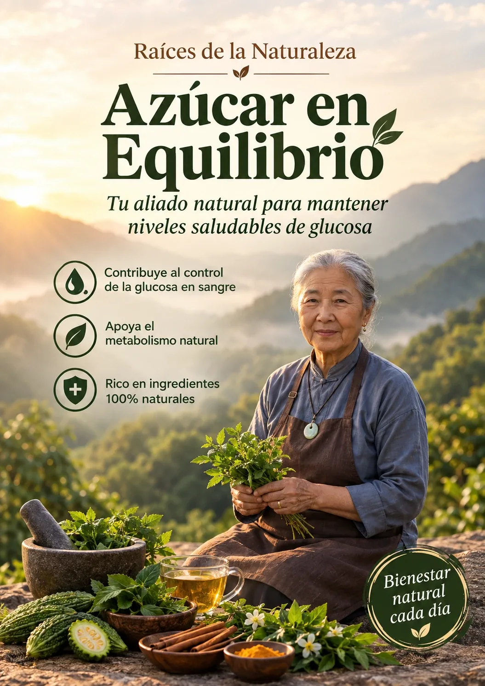

♥
Dile adiós a la idea de que ya no hay nada más que hacer
con tés, aguas, mistelas y cataplasmas milenarias que la Abuela Mei enseña desde hace más de 40 años — cada una con su dosis, su hora y quién no debe tomarla.

Además del libro, recibes 3 guías que te sostienen la mano en cada etapa — del primer día hasta que se vuelve costumbre.
Tu calendario paso a paso — del Día 1 al Día 30 — para dejar de probar una hierba distinta cada semana. En lugar de que tú escojas qué remedio tomar, yo ya organicé tu primer mes en 4 etapas, con la dosis y la hora de cada uno.
Los tés de después de comer, para el sueño que te tumba en el sillón.
Las aguas para la sed de noche y para tanta ida al baño.
Para los pies dormidos y las piernas pesadas al final del día.
Dejarlo armado como rutina, para que no se te caiga en la semana ocupada.
Dónde conseguir hoja de guayaba, nopal fresco y canela de verdad — y cómo distinguirla de la falsa, que es la que casi siempre venden. Cuánto debe costar cada cosa y con qué sustituirla si no la encuentras. Sin gastar en cápsula importada.
Qué tomar en los primeros 10 minutos de un antojo fuerte de dulce, para que se te pase sin pan y sin refresco. Déjalo guardado en el celular: sirve de nada si no lo encuentras rápido.
Es tomar la pastilla, medirte y sentir que ahí se acabó lo que puedes hacer — mientras el cuerpo sigue avisando con sed, sueño y pies dormidos y nadie te explica qué hacer con las otras 23 horas del día.
¿Te mides, ves el número y sientes que hagas lo que hagas no se mueve?
¿Después de comer te cae un sueño que te tumba en el sillón toda la tarde?
¿Te levantas en la noche con sed y con ganas de ir al baño otra vez?
¿Sientes los pies dormidos o las piernas pesadas al final del día?
¿Tomas tu pastilla todos los días y sientes que eso es lo único que estás haciendo por ti?
Si respondiste que sí a alguna de estas, este libro se hizo para ti.
Está en acompañar tu tratamiento con lo que da la tierra, sabiendo la dosis correcta, la hora correcta y qué no mezclar con tu medicina.
Tés, aguas, mistelas y cataplasmas caseras — separados por lo que sientes, listos para que empieces mañana por la mañana.
Tés de sobremesa para cuando la comida te tumba en el sillón — con la hora exacta de tomarlos.
Aguas de hoja y raíz que acompañan al riñón sin forzarlo, para las noches en que te levantas dos y tres veces.
Cataplasmas y baños de pies de toda la vida, para el hormigueo del final del día.
Qué tomar a las cinco, cuando la mano va sola al pan — sin pastilla y sin aguantar hambre.
Tés que apoyan la digestión de la grasa — para quien siente peso del lado derecho después de comer.
Qué no mezclar si tomas metformina, glibenclamida o insulina, y las señales en las que hay que ir al médico y no a la cocina.
Con la promoción especial válida HOY
Acceso inmediato después del pago.
Vas a tener remedios, ruta y seguridad — para dejar de improvisar tu cuidado todos los días.
Tés, aguas, mistelas y cataplasmas — listos en minutos.
Nopal, hoja de guayaba, canela, moringa. Nada de cápsula importada.
Qué no mezclar con metformina, glibenclamida o insulina.
Mañana, tarde y noche mapeados — tú solo sigues.
No. Estos remedios acompañan tu tratamiento, no lo reemplazan. Nunca suspendas ni cambies la dosis de metformina, glibenclamida o insulina por tu cuenta. Y hay algo que casi nadie te dice: varias plantas de este libro —el nopal en ayunas, la canela en cantidad— pueden sumarse al efecto de tu medicina y bajarte el azúcar de más. Por eso cada remedio trae su dosis y su advertencia, y por eso conviene avisarle a tu médico que vas a empezar.
No. La mayoría es hervir agua, esperar y colar. Cada remedio tiene los pasos numerados y el más sencillo del libro tiene tres líneas.
Sí lo son. Nopal, hoja de guayaba, canela, moringa, jengibre, limón, hierbabuena, cola de caballo. Todo de mercado, tianguis o herbolaria — nada de polvo importado ni suplemento caro.
No te voy a prometer un número ni un plazo, porque eso depende de tu tratamiento completo y de tu cuerpo, no de un té. Lo que estos remedios hacen es acompañarte en lo que sientes todos los días: el sueño de después de comer, la sed de noche, el antojo de la tarde. El número lo revisas con tu médico.
Vas al médico, no a la cocina. Dentro del libro viene la lista de señales que piden atención médica y no un remedio casero — sed que no se quita, bajar de peso sin querer, una herida que no cierra, visión borrosa. Ese apartado es el que más me costó escribir y el que más importa.
El acceso es inmediato: en cuanto se aprueba el pago, el libro llega a tu correo y se queda para siempre en tu celular, tablet o computadora. Y sí, hay 7 días de garantía: si no te gusta, te devolvemos el 100% de tu dinero, sin preguntas.
55 remedios naturales ordenados por lo que sientes, cada uno con su dosis, su hora y su advertencia.
Quiero los 55 remedios →🔒 Pago seguro · Acceso inmediato · Garantía de 7 días